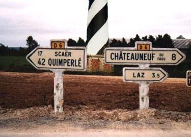

C' est ici que commence cette incroyable histoire...
Vous allez constater que:
La recette est longue et le produit final n' arrive jamais...
Vous constaterez aussi que certains secrets
qui jusqu' ici étaient bien cachés
sont exposés dans ces pages très clairement...

Vous pouvez cliquer sur ce lien pour ressentir le départ.
Pour la suite c' est par ici ou avec le menu a gauche.